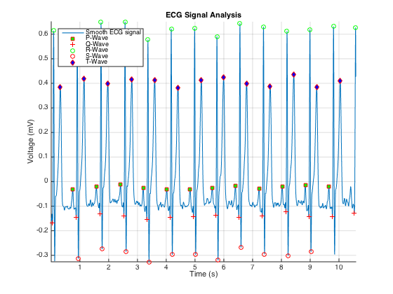
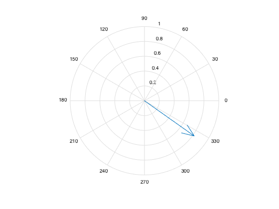

Contents
- 1. Read the data file (comma separated or excel file format) into MATLAB and store the values
- 2. Identify and report key features of the mean ECG signal, including
- a. Heart Rate between peaks
- b. Indicate the QRS complex and T and P wave on a graphical representation of the data
- c. Maximum and minimum voltage
- d. Average P-Q, P-R or Q-T interval
- 3) Using electric potential from two of the lead channels, calculate and graphically display the mean axis of depolarization
- 4) Disease Diagnostics
% Kyle King % BIOE340 - Section 0102 % Lab Assignment #2 % 10-26-2014 clc, clear all, close all % Boilerplate
1. Read the data file (comma separated or excel file format) into MATLAB and store the values
% Open the file and get name and path then store data in "a" [Name, Path] = uigetfile('.*'); filename = strcat(Path, Name); % Ask which file format is used (i.e. CSV or XLS) % prompt = 'Are you using XLS Y/N: '; % str = input(prompt,'s'); % if isempty(str) str = 'Y'; % end % Read file if str == 'Y' a = xlsread(filename); % % For quick Testing: % a = xlsread('/Users/kyleking/Documents/Developer/__Matlab/Matlab-Physiology/Lab 2/6LeadECG2.xls'); % a = xlsread('/Users/kyleking/Documents/Developer/__Matlab/Matlab-Physiology/Lab 2/jackie_ecg.xls'); else a = csvread(filename,2,0); end % Parse the data t = a(:,1); % Time Lone = a(:, 2); % Lead 1 Ltwo = a(:, 3); % Lead 2 Lthr = a(:, 4); % Lead 3
2. Identify and report key features of the mean ECG signal, including
% Signal Prep and Clean Up % First Detrending data [p,s,mu] = polyfit(t,Lone, 5); fluctuation = polyval(p,t,[],mu); ECG_data = Lone - fluctuation; % Then smooth the data with a Savitzky-Golay transform smoothECG = sgolayfilt(ECG_data,7, 23); % figure, plot(t, Lone, 'g', t, ECG_data, 'b', t, smoothECG, 'r'); % To compare datasets and assure reasonable manipulation % Find Max/Min Peaks location and then absolute maxes [~,localMaxes] = findpeaks(smoothECG,'MinPeakDistance', 20); [~,localMins] = findpeaks(-smoothECG,'MinPeakDistance', 10); mxLead = max(smoothECG); mnLead = min(smoothECG); % Combine min and max peaks into one data structure peaks = combine(localMins, localMaxes, 8, 9); % Calibrated values to search within a given range of maximum smoothECG values to: % Find R-Waves Rwaves = localMaxes(smoothECG(localMaxes) > 0.8*mxLead); peaks = combine(Rwaves, peaks, 3, 0); % Combine into main data struc % Find T-Waves Twaves = localMaxes(smoothECG(localMaxes) > 0.12*mxLead & smoothECG(localMaxes) < 0.8*mxLead); peaks = combine(Twaves, peaks, 5, 0); % Combine into main data struc % Going through the partially labeled peaks data structure, search for peaks in relation to easily identified R and T: % Initiliaze data lenPeaks = length(peaks(:,1)); tmpQ = []; tmpP = []; tmpS = []; % Find Q-Wave for i = 1:(lenPeaks-1) % run through all max peaks if peaks(i+1, 2) == 3 % if next peak is an R wave, it's a Q tmpQ = [tmpQ; peaks(i,1)]; % store it dynamically in temp data structure end end peaks = combine(tmpQ, peaks, 2, 0); % Combine into main data struc % Find P-Wave for i = 1:(lenPeaks-1) % run through all max peaks if peaks(i, 2) == 9 && (peaks(i+1, 2) == 2 | peaks(i+2, 2) == 2) % if next peak is an Q wave, it's a P tmpP = [tmpP; peaks(i,1)]; end end peaks = combine(tmpP, peaks, 1, 0); % Combine into main data struc % Find S-Wave for i = 10:(lenPeaks-1) % run through all max peaks if peaks(i-2, 2) == 3 && peaks(i, 2) == 8 % if last peak is an Q wave, it's a S tmpS = [tmpS; peaks(i,1)]; end end peaks = combine(tmpS, peaks, 4, 0); % Combine into main data struc with label % For testing before nextMatch was written % % Plot the identified data elements % lenMax = length(localMaxes); lenMin = length(localMins); lenPeaks = length(peaks(:,1)); % % Plot the smooth ECG data % figure, hold on, plot(t, smoothECG), % for i = 1:(lenMin+lenMax) % % Check for combine.m issue with wave being identified as 0 - i.e. not overwritten % if peaks(i, 2) == 0 % disp('ALERT! Issue with combine.m') % end % end % % Loop through the length of the peaks data to pull out important features % for i = 1:length(peaks(:,1)) % if peaks(i, 2) == 0 % disp('Error: lol that sucks') % elseif peaks(i, 2) == 1 % % Plot P-Waves % % disp(['P ' num2str(peaks(i))]) % plot(t(peaks(i)),smoothECG(peaks(i)),'bs'), % elseif peaks(i, 2) == 2 % % Plot Q-Waves % % disp(['Q ' num2str(peaks(i))]) % plot(t(peaks(i)),smoothECG(peaks(i)),'r+'), % elseif peaks(i, 2) == 3 % % Plot R-Waves % % disp(['R ' num2str(peaks(i))]) % plot(t(peaks(i)),smoothECG(peaks(i)),'go'), % elseif peaks(i, 2) == 4 % % Plot S-Waves % % disp(['S ' num2str(peaks(i))]) % plot(t(peaks(i)),smoothECG(peaks(i)),'ro'), % elseif peaks(i, 2) == 5 % % Plot T-Waves % % disp(['T ' num2str(peaks(i))]) % plot(t(peaks(i)),smoothECG(peaks(i)),'gd', 'MarkerFaceColor','b'), % elseif peaks(i, 2) == 8 % % Plot Min's for testing % % plot(t(peaks(i)),smoothECG(peaks(i)),'d','MarkerFaceColor','b'), % elseif peaks(i, 2) == 9 % % Plot Max's for testing % % plot(t(peaks(i)),smoothECG(peaks(i)),'r+'), % else % disp(['?? ' num2str(peaks(i))]) % end % end % % Give title and labels % title('ECG Signal Analysis'), xlabel('Time (s)'), ylabel('Voltage (mV)'), grid on, axis tight, hold off
a. Heart Rate between peaks
Un-combine peaks by pulling out relevant peaks from main peaks data struc
Pwaves = nextMatch(peaks, 1); Qwaves = nextMatch(peaks, 2); Swaves = nextMatch(peaks, 4); % Initiliaze elements Rint = []; tInt = []; % Find time between all R peaks for i = 2:length(Rwaves) tInt = t(Rwaves(i)) - t(Rwaves(i-1)); Rint = [Rint; tInt]; end % Calculate and display Mean HR HR = 60/mean(tInt); disp(['Avg HR = ' num2str(HR) ' bpm'])
Avg HR = 78.4314 bpm
b. Indicate the QRS complex and T and P wave on a graphical representation of the data
figure, hold on % Plot EKG data plot(t, smoothECG), % Add marker plot(t(Pwaves), smoothECG(Pwaves), 'rs', 'MarkerFaceColor','g'), plot(t(Qwaves), smoothECG(Qwaves), 'r+'), plot(t(Rwaves), smoothECG(Rwaves), 'go'), plot(t(Swaves), smoothECG(Swaves), 'ro'), plot(t(Twaves), smoothECG(Twaves), 'rd', 'MarkerFaceColor','b'), % Give title and labels title('ECG Signal Analysis'), xlabel('Time (s)'), ylabel('Voltage (mV)'), grid on, legend('Smooth ECG signal','P-Wave', 'Q-Wave','R-Wave','S-Wave', 'T-Wave', 'Location', 'NorthWest'); axis tight, hold off
c. Maximum and minimum voltage
maxVoltage = max(ECG_data); disp(['Max Voltage = ' num2str(maxVoltage) 'mV']) minVoltage = min(ECG_data); disp(['Min Voltage = ' num2str(minVoltage) 'mV']) disp('Note: Max/Min of detrended data and accounted for error in data collection')
Max Voltage = 0.70558mV Min Voltage = -0.3322mV Note: Max/Min of detrended data and accounted for error in data collection
d. Average P-Q, P-R or Q-T interval
Initiliaze variables
lenP = length(Pwaves); lenQ = length(Qwaves); count = 0; PQint = []; % If misalignment in number of datapoints, go with the lesser value if lenP>lenQ count = lenQ; else count = lenP; end % Take the difference for i = 2:(count-1) PQint(i-1) = t(Qwaves(i)) - t(Pwaves(i-1)); end % Average and display PQavg = mean(PQint); disp(['Avg interval between P-Q = ' num2str(PQavg) 's'])
Avg interval between P-Q = 0.122s
3) Using electric potential from two of the lead channels, calculate and graphically display the mean axis of depolarization
Detrend data for Lead Three
[p,s,mu] = polyfit(t,Lthr, 5); fluctuation = polyval(p,t,[],mu); ECG_dataL3 = Lthr - fluctuation; % Convert to x/y cordinates xCord = ECG_data(Rwaves(1)); yCord = -(ECG_data(Rwaves(1)) + 2*ECG_dataL3(Rwaves(1)))/(sqrt(3)); % Plot in a round compass figure, compass(xCord,yCord);
4) Disease Diagnostics
Initialize counter array
QRSints = []; % Initiliaze variables lenS = length(Swaves); % If misalignment in number of datapoints, go with the lesser value if lenS > lenQ lenData = lenQ; else lenData = lenS; end % For length of data, calculate width of QRS complex for i = 1:length(lenData) QRSints = [QRSints; t(Swaves(i))-t(Qwaves(i))]; end QRSwidth = mean(QRSints); % Check for slow HR if(HR < 60) % If other factors concurr, make diagnosis if QRSwidth <= .12 && 1.2 <= PQavg <= 2 disp('Diagnosis: Sinus Bradycardia'); else % Possibly not bad news disp('Diagnosis: Some form of Bradycardia'); end else % The good news disp('No Bradycardia'); end % ALso, may accidentally be really good at diagnosis some of the others by unintended warnings!
No Bradycardia